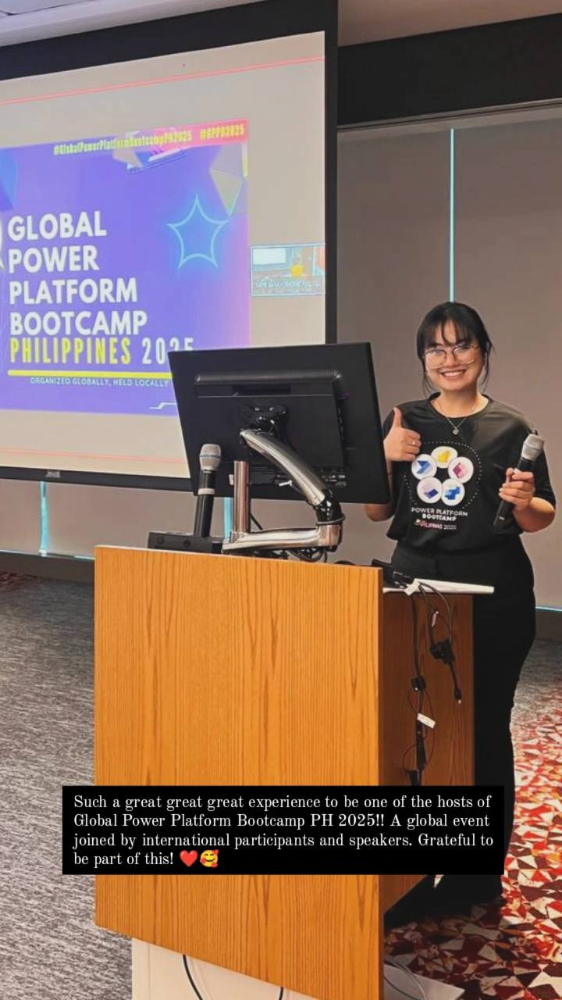
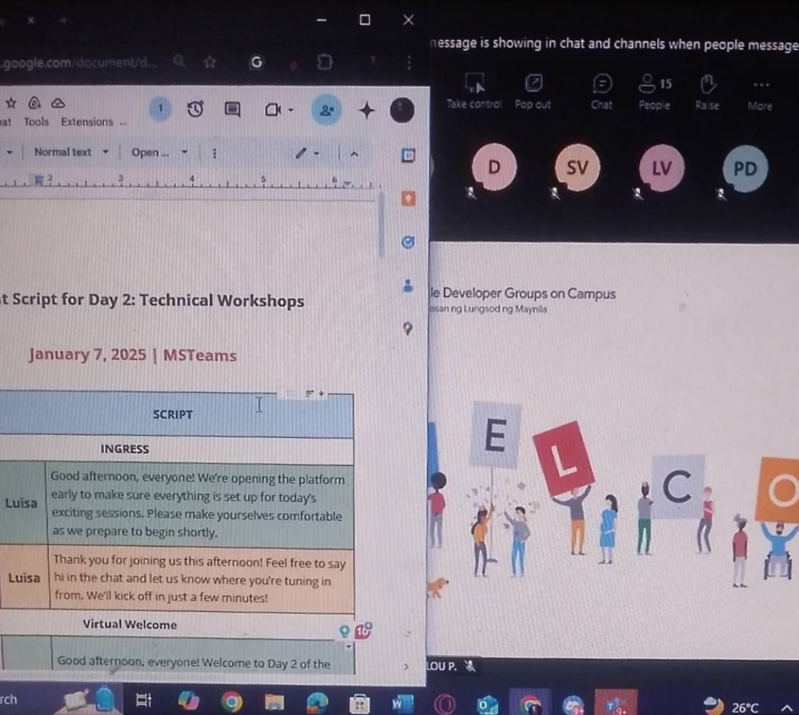
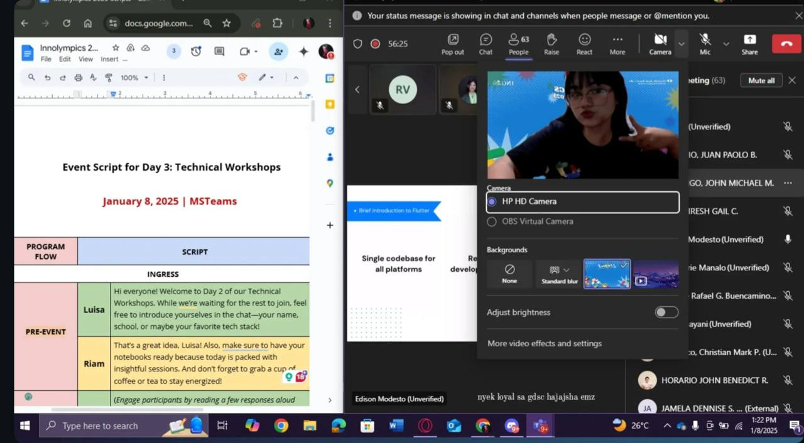
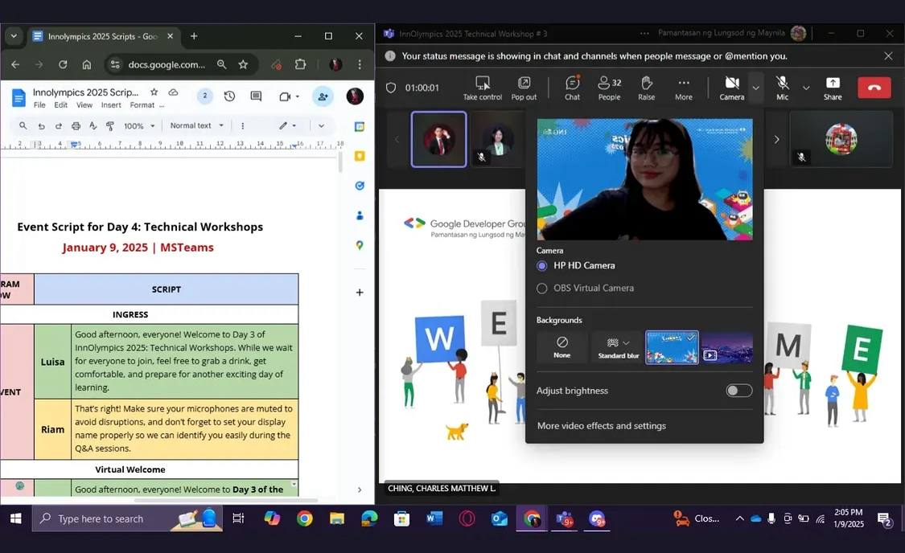
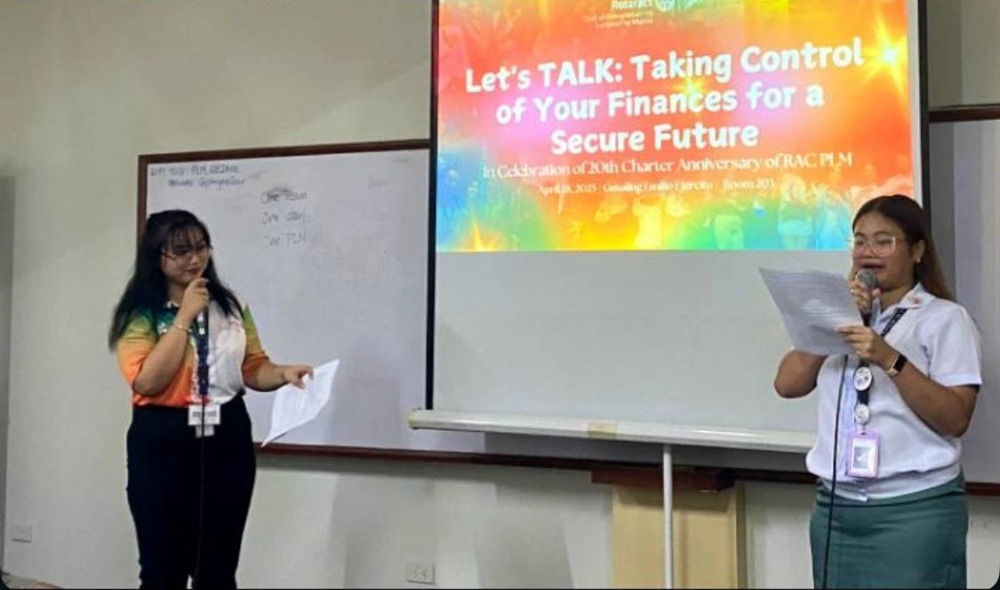
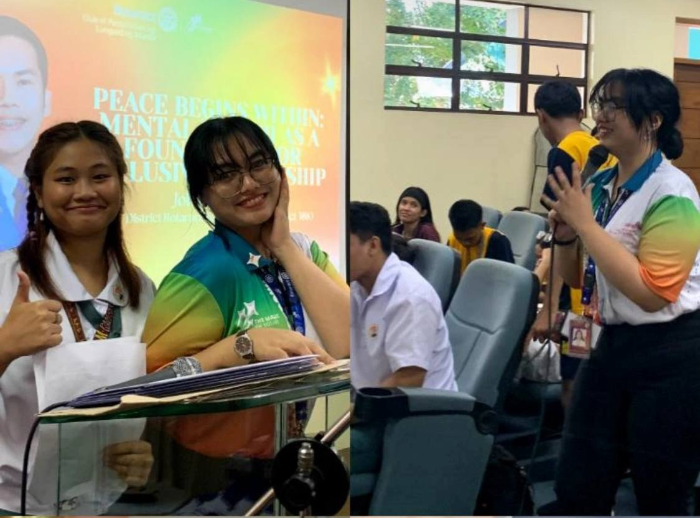
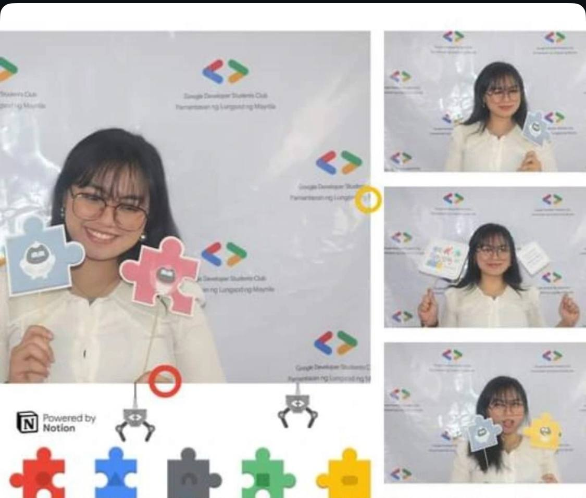
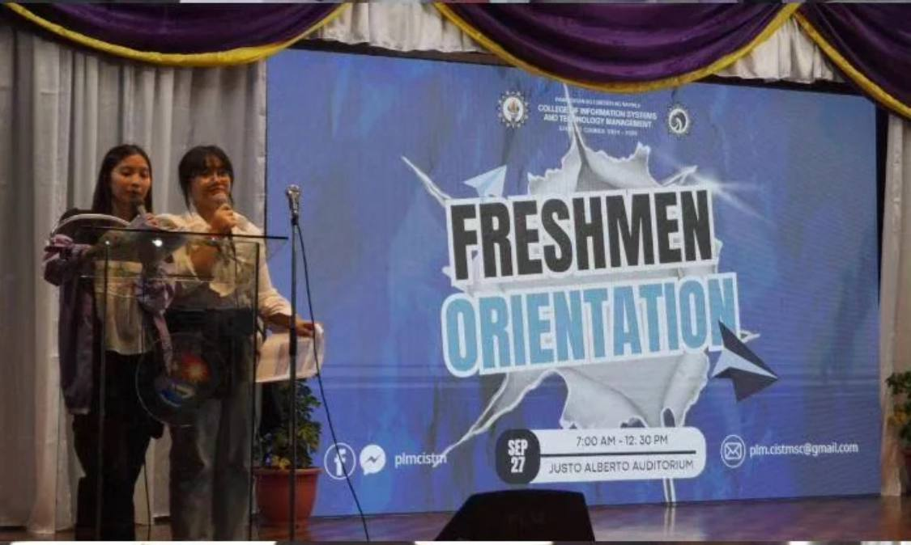
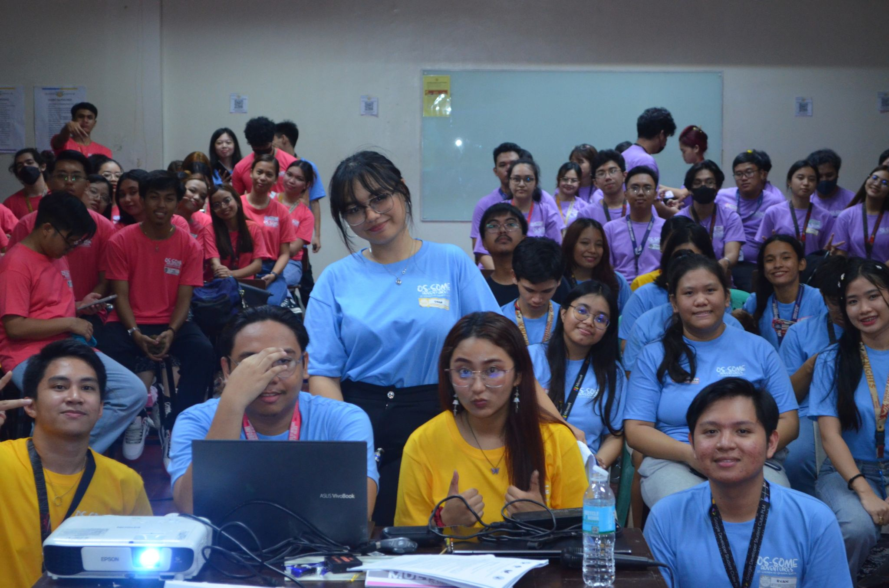

Contributed to club activities focused on IoT and robotics.
Collaborated with members on technical learning and exploration of connected devices.
Aug 2024 — Aug 2025
Social Media Moderator
AWS Cloud Club · AWSCC PH
Moderated community interactions across the club’s social media channels.
Helped share announcements and maintain a welcoming online learning community.
03 — Events & Hosting
Bringing people together.
Since 2024, I have hosted technical workshops, college assemblies, and community seminars, online and in person.

Co-host
Global Power Platform Bootcamp Philippines 2025
Co-hosted Global Power Platform Bootcamp Philippines 2025, an event bringing together international participants and speakers.



Day 1 · January 7 · 1 / 3
– · OnlineHost
Innolympics 2025: Technical Workshop
Hosted the three-day online technical workshop for Innolympics 2025 on January 7, 8, and 9.
Host
CISTM Colloquium 2025
Hosted our college’s first-ever colloquium, bringing together minds in technology and research for insightful discussions, innovation, and collaboration.

Co-host
Let's TALK: Taking Control of Your Finances for a Secure Future
Co-hosted “Let's TALK: Taking Control of Your Finances for a Secure Future,” a seminar focused on financial awareness and planning for the future.
More hosting highlights · 2024↓

Host
General Assembly 2024 — The Spellbinding Magic of Leadership
Hosted “The Spellbinding Magic of Leadership: An Induction and Oath Taking Ceremony” and the seminar “Peace Begins Within: Mental Health as a Foundation for Inclusive Leadership.”

Host
Google Developer Student Clubs General Assembly 2024 — Ok, Google What’s Next?
Hosted the Google Developer Student Clubs General Assembly 2024, themed “Ok, Google What’s Next?”

Co-host
Freshman Orientation
Co-hosted the CISTM Freshman Orientation, welcoming incoming students to the college and the start of their university journey.

Host
OS-Some Adventure: IT's Expedition in an Operating System
Served as host for “OS-Some Adventure: IT's Expedition in an Operating System.”